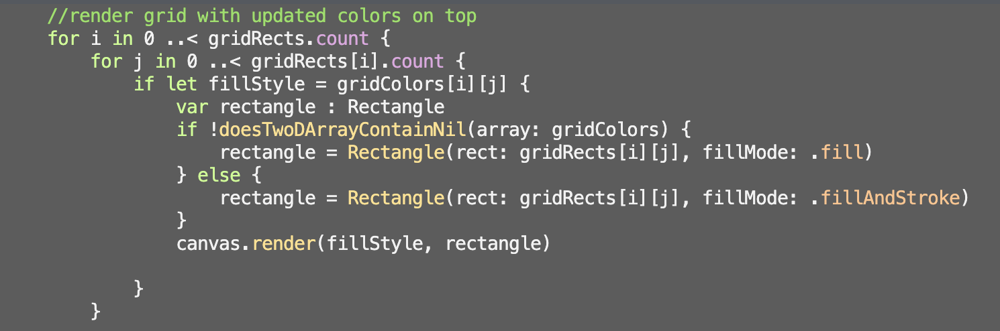

Last year, during computer science one, I had the opportunity to make an ISP. With the help of my partner, we decided to make the game Paint by Petal, inspired by paint by number. When designing this game, we faced many obastacles and challenges. With perseverance, we were able to successfully complete this game. Our overall motivation when creating this game was the idea of the end product. We were also motivated by time as there as a set due date.
In this code segment, this code renders rectangles, making an empty grid on top of the background. This renders prior to the colored grid. In addition to this, code also renders the text of the numbers that go in each rectangle.
In this code segment, this code renders the grid with colors by having the fillMonde: .fillAndStroke.
In the end, my partner and I were able to create what we intended to, a paint by number. The final colored in paint by number can be seen in the image above. With this being said, there were things that did not go as expected. For instance, we originally wanted to create three paint by numbers, each varying in difficulty. Unfortunately, we were not able to execute this because of the time. My partner and I quickly realized that three paint by numbers we beyond our skill level and could not be done in the time given.